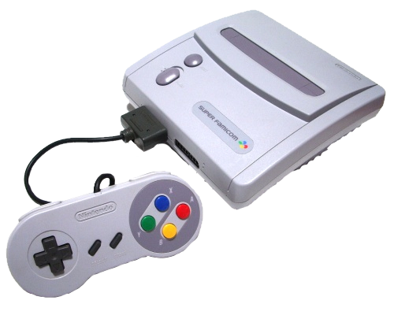
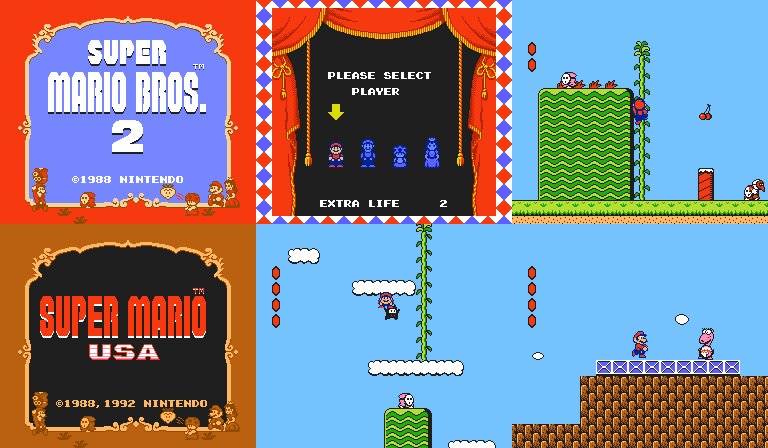
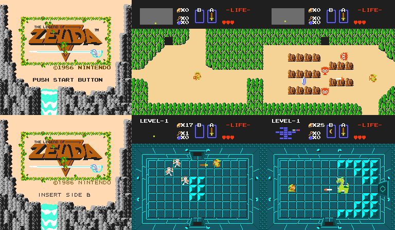

The Super Nintendo Entertainment System
Personal Favourites: Super Mario World, Super Mario Kart, A Link to the Past
Personal Worst: N/A
Development of the Super Famicom
dummy text
Release of the Super Famicom
dummy text
Release of the Super Nintendo Entertainment System
dummy text
The SNES-CD
dummy text
The Satellaview
dummy text
Legacy
dummy text
Console Gallery
The original Super Famicom, SHVC-001, released in November 1990
The original Super NES, SNS-001, released in August 1991
The pal Super NES, SNSP-001A, released in April 1992

The Satellaview, released in April 1995

The New-Style SNES, NES-101, released in October 1997
The Super Famicom Jr, SHVC-101, released in March 1998
Games Gallery (Gameplay captured with bsnes)
Super Mario World

Super Mario Kart

A Link to the Past

Super Mario All Stars
Super Metroid
